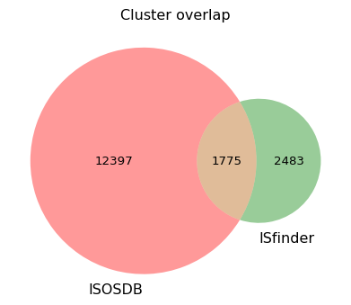
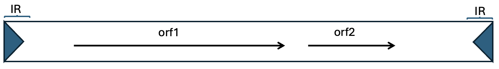
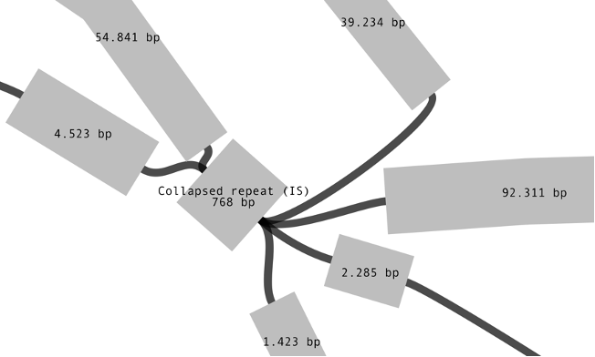
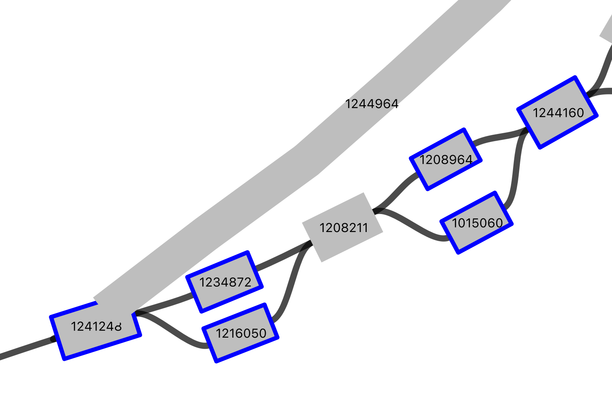
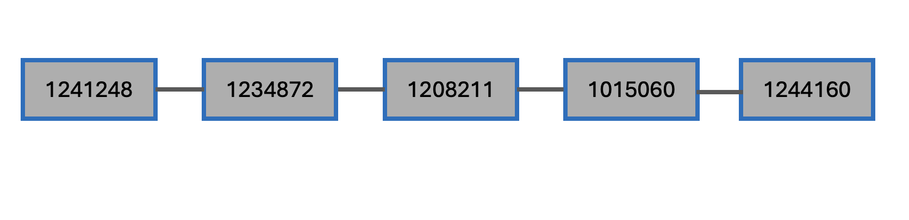
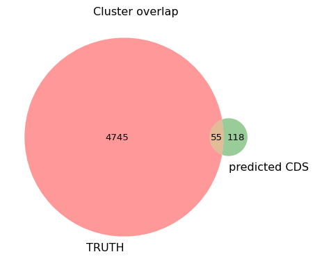
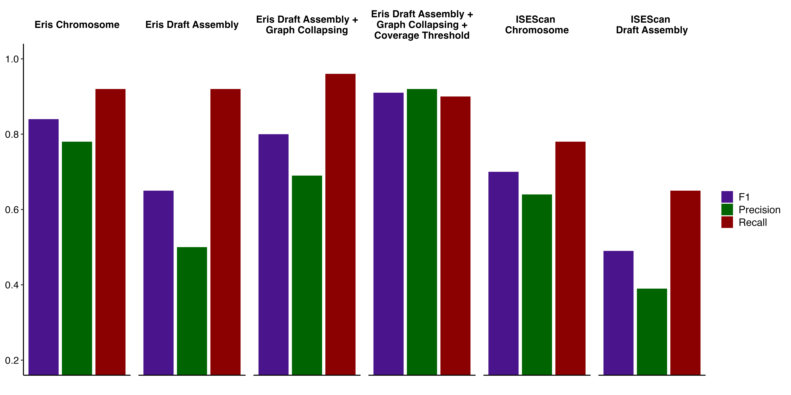

There are 16655 clusters
Clusters with both ISOSDB and ISfinder: 1775
Clusters only ISOSDB: 12397
Clusters only ISfinder: 2483This week I summarised the work that I has done on the project so far
Inserion sequences (IS) are small, simple transposable DNA element, that can move (“transpose”) within a genome.

They move in different ways:
An IS element typically contains:
IS elements are grouped into families based on:
Examples of families:
IS elements can impact nearby genes by:
WGS using short read sequencing presents challenges for IS detection, as multiple copies of IS in different locations represent repeats that are longer than the read length. An assembly algorithm, such as de Brujin graph, collapse these repeats into a single path, resulting in multiple branches entering and exiting the node. This branching leads to fragmentation of the assembly into contigs

Eris is a Python package that detects insertion sequence (IS) elements in bacterial genomes and quantifies how they affect nearby genes. Designed for both command-line users and developers, Eris combines a robust API with lightweight dependencies and seamless installation. It scans for IS elements in input sequences provided in FASTA or GFA format through the following steps:
Downloaded the fastq of EC958 from SRR5194982, and assembled it using SPades, and appied it to eris scan pipeline. I tried to give eris input of both contigs fasta and graph GFA. I also ran isescan to the same dataset for a little comparison.
I also downloaded full chromosome of EC958 and the genebank file of EC958 with the IS annotations on it. I extract the IS element and convert it to bed file. These two files will be treated as the ground truth IS elements inside the isolate.
There are, originally, 41 IS elements inside EC958 chromosome (this will change). 12 IS annotated from EC958 plasmid sequence.
Eris found 139 IS elements from the GFA file and and 66 from the fasta file of SPades. More IS detected here because, the resulted assembly also consist of plasmid and the GFA file has more because it still has the overlap sequence so it might appear the redundant calling
Isescan also report more IS element form the resulted assembly, 58 and 77 from fasta and GFA, respectively.
Eris identified 58 (37 predicted IS intersect with truth IS) IS elements in the complete chromosome, also missed four IS elements:
Isescan detected 65 IS elements in the EC958 chromosome
I simulated illumina paired end fastq of EC958 chromosome using art_illumina. We use this simulation reads so that the resulted assembly will consist of chromosome and also make sure this data come from single cell (clone), reduce the nose from different genetic composition.
Using shovill, bacterial genome assembler, I assembled the simulated reads.
Eris detected 90 IS elements both from GFA and fasta files of simulated assembly
On the draft assembly result, one IS element can split into multiple contigs, and both eris and isescan detect that one IS element separately across the corresponding contig, making the count inflated

For instance this IS element: IS1397
Two copies of IS1397 are fragmented into six IS identifeid contigs, make the call trippled. We further confirm that node in the middle also consist of frgamented IS1397 element.
This fragmented IS also found in the mason simulated fastq, and also found in the real fastq assembly.
By graph traversal logic, fragmented IS sequnces (nodes in the graph) can be collapsed and the IS copies can be quantified by their contig depths relative to the median depth
This approach will help eris find path of fragmented IS and collapse them into one path, also can make more accurate prediction on the how many IS copies in the given input draft assembly
For example:

FragGeneScanRs detected more ORFs than Pyrodgial. It is more sensitive than Pyrodgial, but has lower precision score.
pseudoR gives different result of IS detection than eris and isescan.eris and isescan.
There are 16655 clusters
Clusters with both ISOSDB and ISfinder: 1775
Clusters only ISOSDB: 12397
Clusters only ISfinder: 2483Most clusters come from ISOSDB, while a smaller portion overlaps with the manually curated ISfinder.
Using mapping approach
using clustering approach

There are 4918 clusters
Clusters with both TRUTH and predicted: 55
Clusters only TRUTH: 4745
Clusters only predicted: 118mmseq2 clusteringMade comparison on the eris result from full chromosome, draft, and compare it with the truth:
This is how I calculate the TP, FN, FP:
from collections import defaultdict
def calculate_is_metrics(truth_is_copies: dict[str, int],
predicted_is_copies: dict[str, int]) -> tuple[dict, list]:
"""
Calculate assessment metrics based on identified IS names and their copies
against the truth annotation
"""
# Combine all unique IS name keys
all_is_names = set(truth_is_copies.keys()) | set(predicted_is_copies.keys())
# Initialize total counts
TP_total = 0
FP_total = 0
FN_total = 0
# Data structure for figure generation (per IS name results)
results = defaultdict(lambda: {'Truth': 0, 'Predicted': 0, 'TP': 0, 'FP': 0, 'FN': 0, 'Difference': 0})
# Calculate TP, FP, FN for each IS name
# This calculation doesn't consider the location in the genome
for is_name in sorted(all_is_names):
# If IS name doesn't appear in the truth, give it 0 count
T_c = truth_is_copies.get(is_name, 0)
# If IS name doesn't appear in the prediction, give it 0 count
P_c = predicted_is_copies.get(is_name, 0)
# True Positives (TP): minimum of True and Predicted counts
TP_i = min(T_c, P_c)
# False Positives (FP): overcall
FP_i = max(0, P_c - T_c)
# False Negatives (FN): undercall/missed
FN_i = max(0, T_c - P_c)
# Accumulate totals
TP_total += TP_i
FP_total += FP_i
FN_total += FN_i
# Store per name results
results[is_name]['Truth'] = T_c
results[is_name]['Predicted'] = P_c
results[is_name]['TP'] = TP_i
results[is_name]['FP'] = FP_i
results[is_name]['FN'] = FN_i
results[is_name]['Difference'] = P_c - T_c
return results, [TP_total, FP_total, FN_total]chromosome_metrics = calculate_is_metrics(is_counts_gff, is_counts_chr)
result_all, chrom_metrics = chromosome_metrics
TP_total, FP_total, FN_total = chrom_metrics
# Calculate overall metrics
precision = TP_total / (TP_total + FP_total) if (TP_total + FP_total) > 0 else 0
recall = TP_total / (TP_total + FN_total) if (TP_total + FN_total) > 0 else 0
f1_score = 2 * (precision * recall) / (precision + recall) if (precision + recall) > 0 else 0
print(f"Total True Positives (TP): {TP_total}")
print(f"Total False Positives (FP): {FP_total}")
print(f"Total False Negatives (FN): {FN_total}")
print("-" * 30)
print(f"Precision: {precision:.2f}")
print(f"Recall (Sensitivity): {recall:.2f}")
print(f"F1-Score: {f1_score:.2f}")Total True Positives (TP): 45
Total False Positives (FP): 13
Total False Negatives (FN): 4
------------------------------
Precision: 0.78
Recall (Sensitivity): 0.92
F1-Score: 0.84draft_assembly_metrics = calculate_is_metrics(is_counts_gff, is_counts_gfa)
result_all, draft_metrics = draft_assembly_metrics
TP_total, FP_total, FN_total = draft_metrics
# Calculate overall metrics
precision = TP_total / (TP_total + FP_total) if (TP_total + FP_total) > 0 else 0
recall = TP_total / (TP_total + FN_total) if (TP_total + FN_total) > 0 else 0
f1_score = 2 * (precision * recall) / (precision + recall) if (precision + recall) > 0 else 0
print(f"Total True Positives (TP): {TP_total}")
print(f"Total False Positives (FP): {FP_total}")
print(f"Total False Negatives (FN): {FN_total}")
print("-" * 30)
print(f"Precision: {precision:.2f}")
print(f"Recall (Sensitivity): {recall:.2f}")
print(f"F1-Score: {f1_score:.2f}")Total True Positives (TP): 45
Total False Positives (FP): 45
Total False Negatives (FN): 4
------------------------------
Precision: 0.50
Recall (Sensitivity): 0.92
F1-Score: 0.65from pathlib import Path
from eris.scan import Scanner
from eris.io import SeqFile
from collapse import collapseis
# scan IS in the contigs
p = Path('../../data/ecoli/assembly-simulated/shovill-outputs/contigs.gfa')
with Scanner() as scanner:
eris_result = list(scanner.scan(p))
gfa_eris = eris_result[0]
# load the genome graph
graph_assembly = SeqFile("../../data/ecoli/assembly-simulated/shovill-outputs/contigs.gfa")
graph_assembly.close()
is_eris = collapseis(gfa_eris, graph_assembly)
is_counts_gfa_collapsed = {}
for is_name, value in is_eris.items():
is_counts_gfa_collapsed[is_name] = value[1]Looks like the IS contigs graph is circular
Looks like the IS contigs graph is circular
Looks like the IS contigs graph is circular
Looks like the IS contigs graph is circular
Looks like the IS contigs graph is circulardraft_assembly_collapsed_metrics = calculate_is_metrics(is_counts_gff, is_counts_gfa_collapsed)
result_all, collapse_metrics = draft_assembly_collapsed_metrics
TP_total, FP_total, FN_total = collapse_metrics
# Calculate overall metrics
precision = TP_total / (TP_total + FP_total) if (TP_total + FP_total) > 0 else 0
recall = TP_total / (TP_total + FN_total) if (TP_total + FN_total) > 0 else 0
f1_score = 2 * (precision * recall) / (precision + recall) if (precision + recall) > 0 else 0
print(f"Total True Positives (TP): {TP_total}")
print(f"Total False Positives (FP): {FP_total}")
print(f"Total False Negatives (FN): {FN_total}")
print("-" * 30)
print(f"Precision: {precision:.2f}")
print(f"Recall (Sensitivity): {recall:.2f}")
print(f"F1-Score: {f1_score:.2f}")Total True Positives (TP): 46
Total False Positives (FP): 22
Total False Negatives (FN): 3
------------------------------
Precision: 0.68
Recall (Sensitivity): 0.94
F1-Score: 0.79Because we don’t get IS name from isescan, I extracted the sequence and blast them into ISfinder database to get IS name. Note: I don’t include novel IS element detected by isescan in the calculation.
# get the fasta generated by isescan to have sequence identifiers by their IS cluster
!awk '/^>/{print ">" $2; next} {print}' ../../data/ecoli/isescan-outputs/chromosome/EC958.fasta.is.fna > ../../data/ecoli/isescan-outputs/chromosome/EC958.fasta.is.cluster.fna
# blast isescan IS query to ISfinder, select only the max hit per query sequence
!blastn -query ../../data/ecoli/isescan-outputs/chromosome/EC958.fasta.is.cluster.fna -db ../../eris/src/eris/data/IS.fna -outfmt 6 -evalue 1e-3 -max_target_seqs 1 -out EC958_blast_isescan_ISfinder.txtWarning: [blastn] Examining 5 or more matches is recommendedisescan_blast_chrom = {}
with open("EC958_blast_isescan_ISfinder.txt") as blast:
entries = blast.readlines()
for entry in entries:
entry = entry.split("\t")
isfinder_name = entry[1].split("_")[0]
if isfinder_name not in isescan_blast_chrom:
isescan_blast_chrom[isfinder_name] = 1
else:
isescan_blast_chrom[isfinder_name] += 1
print(isescan_blast_chrom){'ISEc23': 4, 'ISSen3': 1, 'ISEc24': 1, 'IS4': 2, 'ISEc12': 4, 'ISEc1': 1, 'IS1397': 2, 'IS609': 3, 'IS200C': 2, 'ISEc38': 1, 'ISEc20': 1, 'IS100kyp': 2, 'IS1R': 1, 'IS1A': 2, 'IS1203': 1, 'ISKox3': 1, 'ISSd1': 2, 'ISEch14': 1, 'ISEc45': 1, 'IS2': 1, 'ISEc22': 1, 'ISKpn42': 1, 'ISEc10': 1, 'ISEc52': 3, 'IS1F': 2, 'IS629': 3, 'ISEc43': 1, 'ISEc49': 3, 'ISCro1': 1, 'IS21': 1, 'ISEc13': 1, 'ISLad1': 1, 'ISEcp1': 1, 'IS5': 1, 'ISEc8': 3, 'ISEc53': 1}isescan_chrom = calculate_is_metrics(is_counts_gff, isescan_blast_chrom)
result_all, isescan_chrom_metrics = isescan_chrom
TP_total, FP_total, FN_total = isescan_chrom_metrics
# Calculate overall metrics
precision = TP_total / (TP_total + FP_total) if (TP_total + FP_total) > 0 else 0
recall = TP_total / (TP_total + FN_total) if (TP_total + FN_total) > 0 else 0
f1_score = 2 * (precision * recall) / (precision + recall) if (precision + recall) > 0 else 0
print(f"Total True Positives (TP): {TP_total}")
print(f"Total False Positives (FP): {FP_total}")
print(f"Total False Negatives (FN): {FN_total}")
print("-" * 30)
print(f"Precision: {precision:.2f}")
print(f"Recall (Sensitivity): {recall:.2f}")
print(f"F1-Score: {f1_score:.2f}")Total True Positives (TP): 39
Total False Positives (FP): 20
Total False Negatives (FN): 10
------------------------------
Precision: 0.66
Recall (Sensitivity): 0.80
F1-Score: 0.72!awk '/^>/{print ">" $2; next} {print}' ../../data/ecoli/isescan-outputs/shovill-outputs/contigs.fa.is.fna > ../../data/ecoli/isescan-outputs/shovill-outputs/contigs.fa.is.cluster.fna
!blastn -query ../../data/ecoli/isescan-outputs/shovill-outputs/contigs.fa.is.cluster.fna -db ../../eris/src/eris/data/IS.fna -outfmt 6 -evalue 1e-3 -max_target_seqs 1 -out shovill_blast_isescan_ISfinder.txtWarning: [blastn] Examining 5 or more matches is recommendedisescan_blast_shovill = {}
with open("shovill_blast_isescan_ISfinder.txt") as blast:
entries = blast.readlines()
for entry in entries:
entry = entry.split("\t")
isfinder_name = entry[1].split("_")[0]
if isfinder_name not in isescan_blast_shovill:
isescan_blast_shovill[isfinder_name] = 1
else:
isescan_blast_shovill[isfinder_name] += 1isescan_shovill = calculate_is_metrics(is_counts_gff, isescan_blast_shovill)
result_all, isescan_shovill_metrics = isescan_shovill
TP_total, FP_total, FN_total = isescan_shovill_metrics
# Calculate overall metrics
precision = TP_total / (TP_total + FP_total) if (TP_total + FP_total) > 0 else 0
recall = TP_total / (TP_total + FN_total) if (TP_total + FN_total) > 0 else 0
f1_score = 2 * (precision * recall) / (precision + recall) if (precision + recall) > 0 else 0
print(f"Total True Positives (TP): {TP_total}")
print(f"Total False Positives (FP): {FP_total}")
print(f"Total False Negatives (FN): {FN_total}")
print("-" * 30)
print(f"Precision: {precision:.2f}")
print(f"Recall (Sensitivity): {recall:.2f}")
print(f"F1-Score: {f1_score:.2f}")Total True Positives (TP): 33
Total False Positives (FP): 49
Total False Negatives (FN): 16
------------------------------
Precision: 0.40
Recall (Sensitivity): 0.67
F1-Score: 0.50library(tidyverse)
library(ggplot2)
library(patchwork)
df <- data.frame(
scenario = c(
"Eris Chromosome",
"Eris Draft Assembly",
"Eris Draft Assembly +\nGraph Collapsing",
"Isescan Chromosome",
"Isescan Draft Assembly"
),
Precision = c(0.78, 0.50, 0.69, 0.64, 0.39),
Recall = c(0.92, 0.92, 0.96, 0.78, 0.65),
F1 = c(0.84, 0.65, 0.80, 0.70, 0.49)
)
df_long <- df %>%
pivot_longer(cols = c(Precision, Recall, F1),
names_to = "Metric",
values_to = "value")
my_colors <- c(
"Precision" = "darkgreen",
"Recall" = "darkred",
"F1" = "#4A148C"
)
ggplot(df_long, aes(x = Metric, y = value, fill = Metric)) +
geom_col(position = "dodge", width = 0.8, color = "transparent") +
scale_fill_manual(values = my_colors) +
facet_wrap(~ scenario, nrow = 1) +
coord_cartesian(ylim = c(0.2, 1)) +
theme_classic(base_size = 14) +
labs(
y = "Score",
x = ""
) +
theme(
plot.background = element_rect(fill = "transparent", color = NA),
panel.background = element_rect(fill = "transparent", color = NA),
strip.background = element_rect(fill = "transparent", color = NA),
plot.title = element_text(size = 20, face = "bold", color = "#4A148C"),
axis.text.x = element_blank(),
axis.ticks.x = element_blank(),
axis.text.y = element_text(size = 12, color = "black"),
axis.title.y = element_blank(),
strip.text = element_text(size = 12, face = "bold", color = "black"),
panel.spacing = unit(1.5, "lines"),
legend.title = element_blank(),
legend.text = element_text(size = 12, color = "black"),
legend.background = element_rect(fill = "transparent", color = NA),
legend.key = element_rect(fill = "transparent", color = NA)
)
ggsave(
filename = "pictures/identification_metrics.png",
width = 15,
height = 7.5,
dpi = 500,
bg = "transparent"
)
Questions:
Extract the whole contigs that consist of IS element inside, and map them in to reference genome. Then we can extract the coordinate.. then we can intersect tehm with the annotation!
But when we map them, we will find multiple mapping for the same extracted seqeunce, right?
For coriousity, just wanted to check the connected nodes are indeed overlap
from utilities import hamming_distance, reverse_complement
suffix = reverse_complement(str(nodes_seq["1241248"]))[-111:]
prefix = reverse_complement(str(nodes_seq["1216050"]))[:111]
mismatches = sum(1 for a,b in zip(suffix,prefix) if a!=b)
print(mismatches)0Yes, they are overlap
check hamming distance at nodes from branching point, how much they are different?
node_1 = reverse_complement(nodes_seq["1234872"])
node_2 = reverse_complement(nodes_seq["1216050"])
print(hamming_distance(node_1, node_2))
node_3 = nodes_seq["1208964"]
node_4 = reverse_complement(nodes_seq["1015060"])
print(hamming_distance(node_3, node_4))3
1Branching usually they different in 1-3 base, and assembler cannot decide which one is the correct path.